Dein Manifestationsjournal
Sag Enara, was du dir wünschst. Sie arbeitet jeden Tag mit dir daran.
Zwei kurze Rituale, ein gesprochener Kurs und eine Begleiterin, die sich an deine Worte erinnert. Ein paar Minuten am Tag, für iPhone und Android.
Die Rituale, dein Journal und dein Himmel bleiben kostenlos. Sieben Tage lang ist auch Plus dabei, ohne Zahlungsdaten.
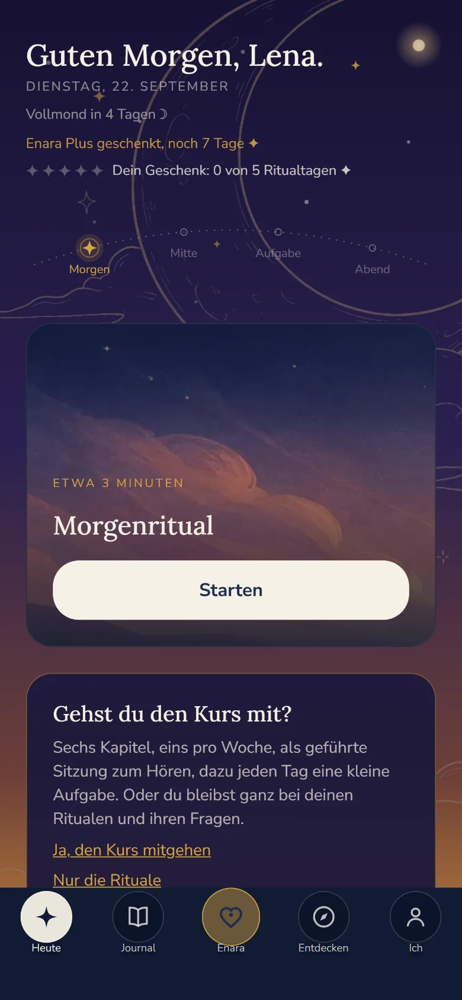
Für iPhone und Android
Auf Deutsch geschrieben, nicht übersetzt
Keine Werbung, kein Tracking
Sieben Gratistage, kein automatisches Abo
Beispielkonto Lena
Ihre Worte. Enaras Antwort.
Lena ist keine echte Nutzerin, sondern ein Konto, das wir für diese Seite angelegt haben. Ihr Wunsch steht in ihren eigenen Worten, und alles, was Enara ihr antwortet, ist genau so in der App entstanden.
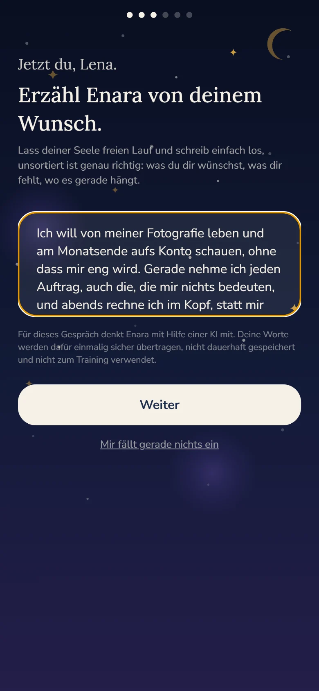
Was Lena erzählt
„Ich will von meiner Fotografie leben und am Monatsende aufs Konto schauen, ohne dass mir eng wird.“
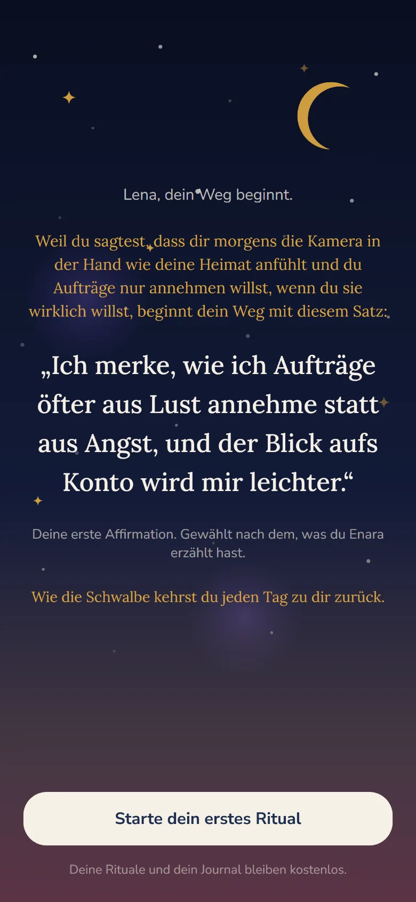
Was Enara daraus macht
Ein kurzes Kennenlerngespräch, ein paar Fragen, und daraus ihr erster Satz. Nicht aus einer Liste, sondern aus dem, was Lena gerade gesagt hat.
Ein Monat mit Lena, Beispielkonto
So arbeitet Enara mit dir.
Ein paar Minuten am Tag, mehr braucht es nicht. Hier ist Lenas erster Monat, Bild für Bild aus ihrem Konto.
Tag 1
Zwei Anker und eine kleine Aufgabe.
Morgens richtet Lena den Tag aus, abends schließt sie ihn. Dazwischen liegt eine Aufgabe aus dem Kurs, und Enara füllt sie mit Lenas eigenem Wunsch.
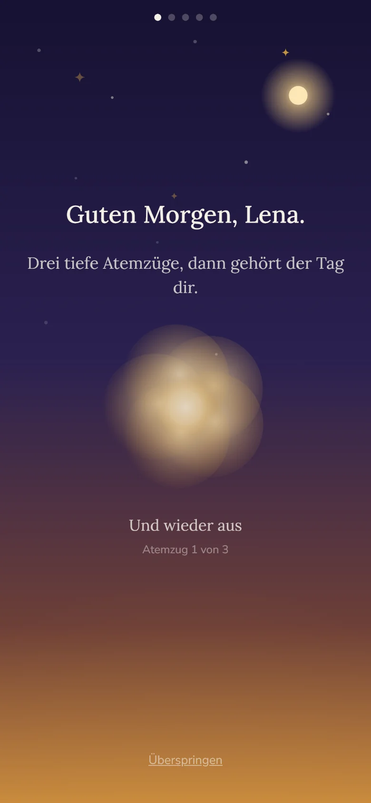
Morgens
Drei Minuten, die den Tag ausrichten.
Eine Intention, drei Dankbarkeiten und ihr Satz für heute, in der Stärke, die sie gerade glauben kann.
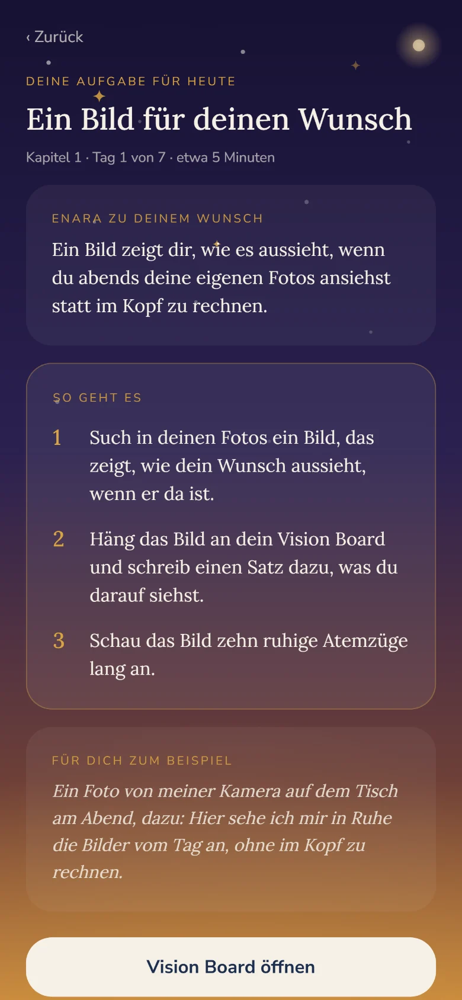
Tagsüber
Eine Aufgabe, für Lena gefüllt.
85 kleine Aufgaben gibt es im Kurs, eine je Tag. Mit Plus schreibt Enara den Bezug dazu:
„Ein Bild zeigt dir, wie es aussieht, wenn du abends deine eigenen Fotos ansiehst statt im Kopf zu rechnen.“
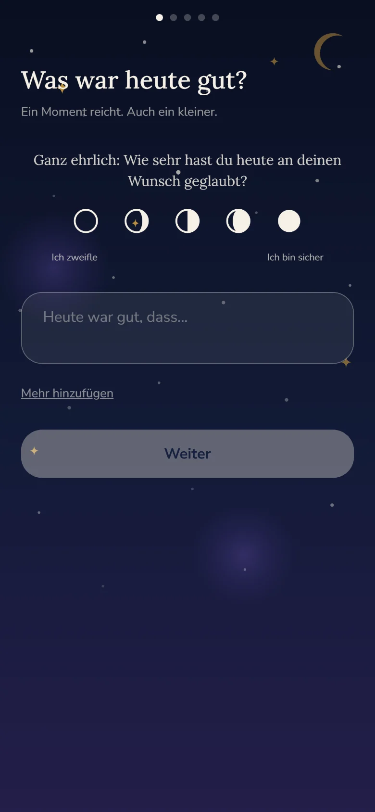
Abends
Der Abend prüft nicht, er schließt.
Was gut war, was sie loslässt. Dann ist der Tag zu, und am Himmel steht ein Stern.
Woche 1
Enara lernt, wie Lena spricht.
Nach ein paar Tagen kennt Enara Lenas Einträge. Was sie schreibt, kommt in Gesprächen wieder, und der Kurs führt sie Kapitel für Kapitel durch das, was sie in den Ritualen übt.
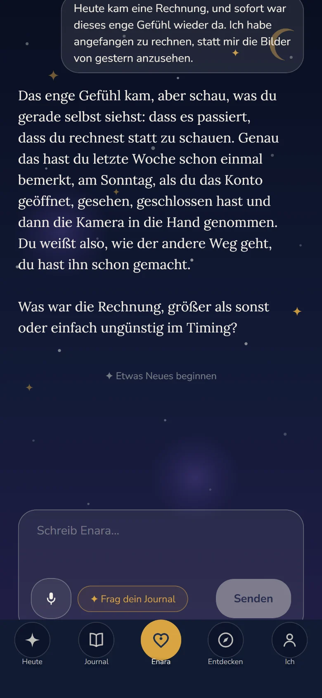
Das Gespräch
Sie antwortet mit Gedächtnis.Plus
Lena schreibt von einer Rechnung. Enara nennt keinen Betrag und keinen Trick. Sie erinnert an einen Tag aus Lenas Journal, an dem es anders lief, und stellt eine Frage.
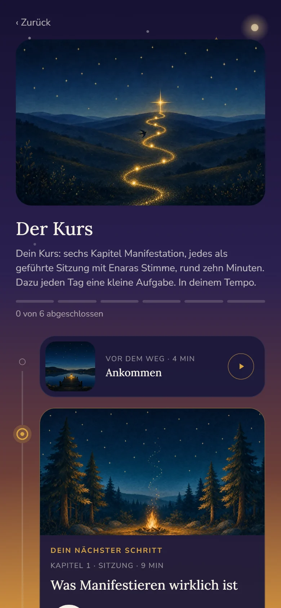
Der Kurs
Sechs Kapitel, zum Hören.
Jedes Kapitel ist eine geführte Sitzung von rund zehn Minuten in Enaras Stimme, eine Woche lang, mit einer Aufgabe pro Tag. Die ersten zwei Kapitel sind gratis.
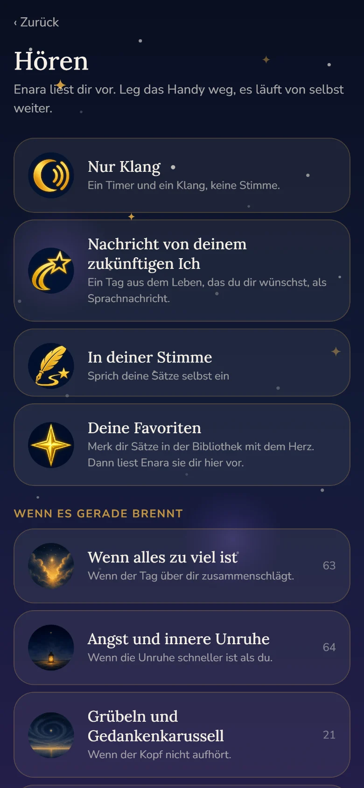
Zwischendurch
Enara liest vor.
13 Playlists in ihrer Stimme, vom Einschlafen bis zum langen Weg, dazu acht Klänge. Handy weglegen, es läuft weiter, auch bei gesperrtem Bildschirm.
Monat 1
Am Monatsende kommt etwas zurück.
Jeder Tag mit Ritual wird ein Stern. Aus den Sternen entsteht ein Bild, und zum Monatsende legt Enara es Lena noch einmal hin, zusammen mit einem Satz aus ihren eigenen Worten.
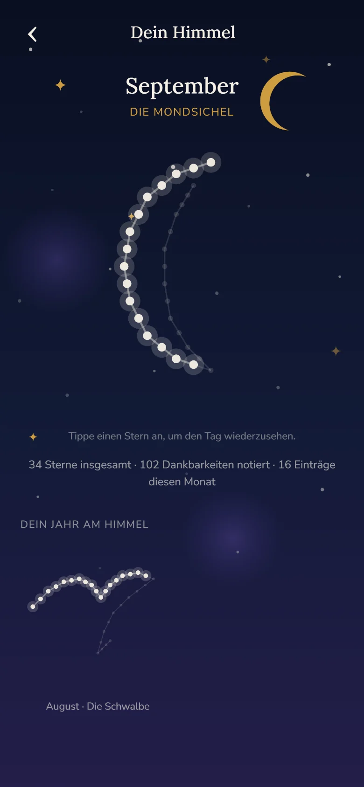
Ihr Himmel
Jeder Tag mit Ritual setzt einen Stern.
Lenas September, 16 Sterne, und darunter ihr August. Jeder Stern führt zurück zu seinem Tag. Nichts verfällt, nichts mahnt.
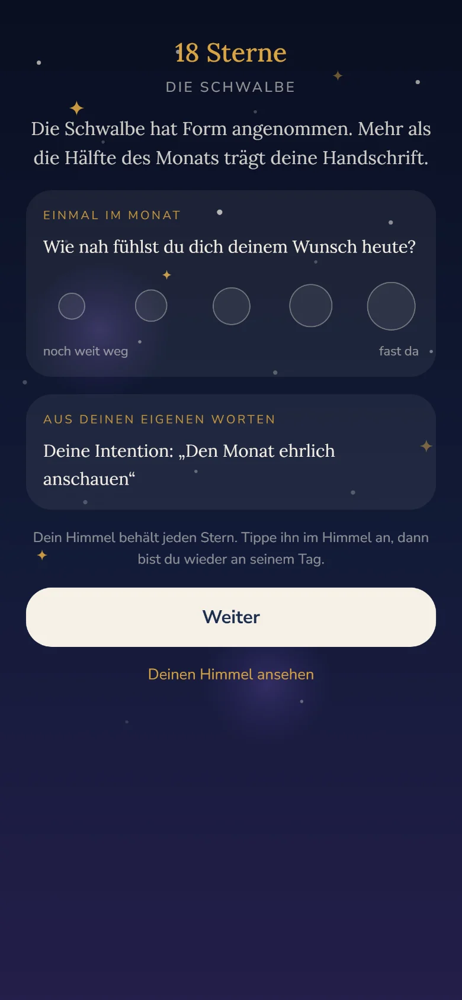
Der Monatsrückblick
Kein Pokal. Ein Beweis.
18 Sterne im August, ihre Intention vom letzten Tag, und einmal im Monat die Frage, wie nah sich ihr Wunsch gerade anfühlt. Mit Plus schreibt Enara dazu einen Brief über den Monat.
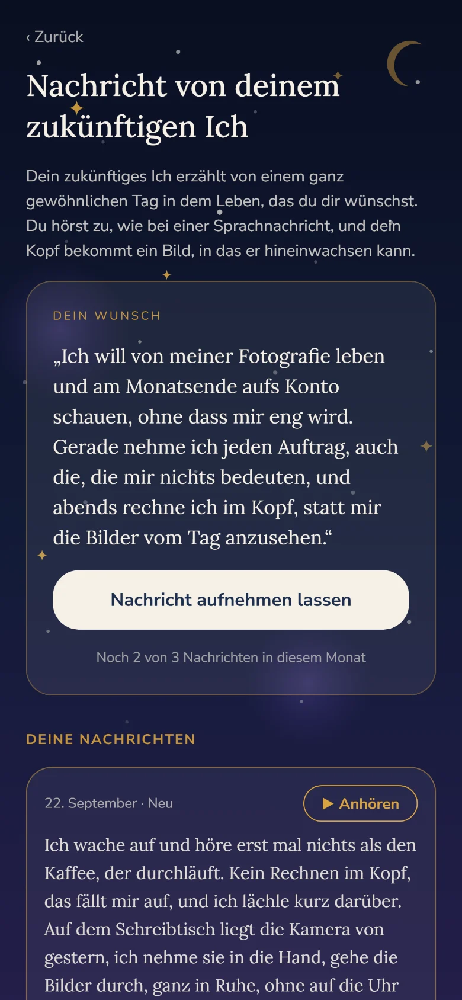
Ihr zukünftiges Ich
Ein Tag aus dem Leben, das sie sich wünscht.Plus
Ihr zukünftiges Ich erzählt einen ganz gewöhnlichen Tag, als Sprachnachricht in Enaras Stimme. Eine Vorstellungshilfe, kein Versprechen. Unten kannst du sie hören.
Hörprobe
Enaras Stimme, zum Reinhören.
Alles, was Enara vorliest, ist in ihrer Stimme vertont, einer KI Stimme, die zu ihr gehört: 1.560 Sätze, 8 geführte Sitzungen, 13 Playlists. Zwei Stücke daraus, direkt hier.
Aus dem Kurs: Ankommen
Die erste Minute der Sitzung, die vor jedem Werkzeug stehen kann. Gratis in der App.
„Setz dich aufrecht hin, so dass du wach bleibst. Die Hände liegen im Schoß oder auf den Beinen.“
Die ganze Sitzung dauert knapp vier Minuten, die sechs Kapitel je rund zehn.
Lenas Nachricht von ihrem zukünftigen IchPlus
Aus ihrem Wunsch entstanden, gesprochen in Enaras Stimme. Rund eine Minute.
„Ich wache auf und höre erst mal nichts als den Kaffee, der durchläuft. Kein Rechnen im Kopf, das fällt mir auf, und ich lächle kurz darüber.“
Text und Stimme entstehen mit KI aus dem eigenen Wunsch. Eine Vorstellungshilfe, kein Versprechen. Drei neue Nachrichten je Monat, gespeicherte bleiben immer hörbar.
Andere Wünsche
Lena wünscht sich Ruhe beim Geld. Du vielleicht etwas anderes.
Sechs Lebensbereiche stehen im Onboarding zur Wahl, ein Hauptwunsch und ein zweiter. Die Vorgehensweise bleibt dieselbe, die Worte darin sind deine.
„Ich wünsche mir eine Beziehung, in der ich mich nicht kleiner machen muss.“
- Dein Satz
- Enara baut ihn aus deinen Worten, in der Stärke, die du gerade glauben kannst. Sanft, Wachstum oder Kraftvoll.
- Die Aufgabe
- Dieselben kleinen Aufgaben aus dem Kurs, mit Plus auf deinen Wunsch bezogen: hier auf dich, nicht auf eine andere Person.
- Das Gespräch
- Enara fragt nach deinem Tag und deinen Einträgen. Sie verspricht dir niemanden und redet dir niemanden aus.
„Ich will abends einschlafen, ohne den Tag noch einmal gegen mich zu verhandeln.“
- Dein Satz
- Aus deinen Worten gebaut, morgens in der Satzkarte, abends im Abschluss.
- Das Abendritual
- Was gut war, was du loslässt. Dazu die Playlist zum Einschlafen in Enaras Stimme, sie läuft auch bei gesperrtem Bildschirm weiter.
- Das Gespräch
- Enara hört zu, erinnert sich an die Woche und stellt die eine Frage, die weiterführt. In einer Krise nennt sie dir die Telefonseelsorge und Menschen, die jetzt helfen können.
„Ich will abends noch Energie für die Dinge haben, die ich liebe.“
- Dein Satz
- Aus deinen Worten, nie eine Diagnose und nie ein Heilversprechen. Enara ist eine KI und macht daraus kein Geheimnis.
- Die Aufgabe
- Kleine Schritte von einer bis zehn Minuten, mit Plus auf deinen Alltag bezogen.
- Der Himmel
- Jeder Tag, an dem du da warst, wird ein Stern. Auch drei Sterne sind drei Tage.
Alles, was dabei ist
Viel bleibt kostenlos. Plus macht Enara persönlich.
Die Zahlen sind am Code nachgezählt, Stand September 2026.
Dauerhaft gratis
Ohne Zahlungsdaten, mit Konto auf jedem Gerät.
- Morgenritual, Tagesbogen, Abendritual mit Vertiefung und Wochenfragen
- Journal mit Kalender, Tagesseiten, Suche und freiem Schreiben
- Dein Himmel mit 12 Sternbildern, Jahresansicht und Monatsrückblick
- Dein Sternbild, das mit dir wächst
- Die ganze Bibliothek: 1.560 Sätze in drei Stärken, Favoriten, Satz als Karte teilen
- Hören: alle 13 Playlists, 8 Klänge, Nur Klang mit Timer
- Kurs: die Sitzung Ankommen, Kapitel 1 und 2, alle 85 Aufgaben
- Vision Board mit zwei Bildern, fünf Sätze in deiner eigenen Stimme
- Erinnerungen, App Sperre, Deutsch und Englisch
Enara Plus
Alles, wofür Enara dich kennen muss. Sieben Tage inklusive.
- Gespräche mit Enara, mit Gedächtnis aus deinem Journal, und Frag dein Journal
- Die persönliche Aufgabe: Enara bezieht jede Aufgabe auf deinen Wunsch
- Nachrichten von deinem zukünftigen Ich, drei je Monat
- Alle geführten Sitzungen, Kapitel 3 bis 6 und die Abendsitzung
- Grüße am Morgen und am Abend in eigenen Worten, dazu Impulse zwischendurch
- Der Brief zum Monat und Enaras Notiz nach dem Ritual
- Sprechen statt tippen: Enara macht einen klaren Eintrag daraus
- Mondritual an Neumond und Vollmond, alle Schreibvorlagen, Dein Wunsch in eigenen Sätzen
- Vision Board und eigene Stimme ohne Grenze
Ehrlich
Was Enara nie verspricht.
Ein Journal lebt davon, dass du ehrlich sein kannst. Das gilt auch für uns.
- Kein Ergebnis. Enara sagt nie, wohin dein Weg führt. Sie hilft dir, jeden Tag ein paar Minuten da zu sein. Den Weg gehst du.
- Kein Betrag, kein Datum, keine höhere Macht, die für dich liefert. Bei einem Geldwunsch spricht Enara über Ruhe und Ordnung im Alltag, nie über Summen.
- Keine Therapie. Enara ist eine künstliche Intelligenz und sagt das offen. In einer Krise nennt sie dir die Telefonseelsorge und Menschen, die jetzt helfen können.
- Keine erfundenen Stimmen. Lena ist ein Beispielkonto. Es gibt auf dieser Seite keine Erfahrungsberichte, die es nicht gibt.
Dein Konto liegt in Frankfurt
Deine Einträge werden in deinem Konto auf Servern in Frankfurt gesichert und über eine verschlüsselte Verbindung übertragen. So sind sie beim Gerätewechsel wieder da.
KI nur mit deinem Ja
Bevor du zugestimmt hast, geht kein Wort an eine KI. Dein Ja kannst du jederzeit zurücknehmen, Enara bleibt dann als Journal vollständig nutzbar.
Keine Werbung, kein Tracking
Enara zeigt dir nichts an außer Enara. Keine Werbenetzwerke, keine Analyse zu Marketingzwecken, auch nicht auf dieser Seite.
Löschen, wann du willst
Dein Konto samt allen Inhalten löschst du selbst in der App. Was du geschrieben hast, bleibt deins, auch ohne Abo, immer.
Preise
Ehrlich und einfach.
Jedes neue Konto beginnt mit sieben Gratistagen und vollem Zugang, ohne Zahlungsdaten. Wer in der ersten Woche an fünf Tagen ein Ritual macht, bekommt drei Tage dazu. Danach entscheidest du, ein Abo startet nie von allein.
Enara
Dein tägliches Ritual, dauerhaft frei.
0 € für immer
- Beide Rituale und der Tagesbogen
- Journal, Himmel, Sternbild, Monatsrückblick
- Die ganze Bibliothek und alles zum Hören
- Kurs bis Kapitel 2, alle Aufgaben des Tages
Enara Plus
Mit Enara als Begleiterin an deiner Seite.
12,99 € im Monat
oder 59,99 € im Jahr
- Gespräche mit Gedächtnis aus deinem Journal
- Die persönliche Aufgabe und Nachrichten von deinem zukünftigen Ich
- Alle geführten Sitzungen des Kurses
- Grüße, Impulse und der Brief zum Monat
- Sprechen statt tippen, Mondritual, alle Vorlagen
- Vision Board und eigene Stimme ohne Grenze
Die Preise siehst du vor jedem Kauf im Store. Ein Abo verlängert sich automatisch, bis du kündigst. Das geht jederzeit in deinen Store Einstellungen, und deine Einträge bleiben auch ohne Abo vollständig bei dir.
Fragen
Kurz beantwortet.
Was kostet Enara?
Die Rituale, das Journal, dein Himmel, die ganze Bibliothek und alles zum Hören sind dauerhaft kostenlos. Enara Plus kostet 12,99 € im Monat oder 59,99 € im Jahr, das sind 5 € im Monat. Dazu gehören die Gespräche mit Gedächtnis, die persönliche Aufgabe, die Nachrichten vom zukünftigen Ich, alle geführten Sitzungen, Grüße und Impulse, der Brief zum Monat, Sprechen statt tippen, das Mondritual und alle Schreibvorlagen. Jedes neue Konto beginnt mit sieben Gratistagen und vollem Zugang, ohne Zahlungsdaten.
Startet nach den Gratistagen automatisch ein Abo?
Nein, nie. Nach den Gratistagen wechselt Enara von allein in die kostenlose Version. Ein Abo gibt es nur, wenn du es selbst im Store abschließt.
Ist Lena echt?
Nein. Lena ist ein Beispielkonto, das wir für diese Seite angelegt haben, mit einem Wunsch in ihren Worten und Journaltagen, die wir geschrieben haben. Alles, was Enara ihr antwortet, ist echt in der App entstanden. Enara formuliert jedes Mal neu, die Bilder zeigen einen echten Lauf. Sie ist keine Kundin, und sie berichtet nichts.
Was passiert mit meinen Einträgen?
Deine Einträge werden in deinem Konto auf Servern in Frankfurt gesichert und verschlüsselt übertragen, damit sie beim Gerätewechsel bei dir bleiben. Enara zeigt keine Werbung und verkauft keine Daten. Dein Konto samt allen Inhalten löschst du selbst in der App. Details stehen in der Datenschutzerklärung.
Liest eine KI mein Journal einfach mit?
Nicht ohne dein Ja. Erst danach schickt die App ein Paket aus deinem Konto mit: dein Profil und dein Wunsch, deine Ritualantworten der letzten Tage, Enaras eigene Wochenzusammenfassungen und, solange der Leseschalter an ist, deine frei geschriebenen Seiten. Mehr dazu in der Datenschutzerklärung. Nimmst du dein Ja zurück, bleibt Enara als Journal vollständig nutzbar.
Ersetzt Enara eine Therapie?
Nein. Enara ist ein Werkzeug für Selbstreflexion und Wohlbefinden, keine medizinische oder therapeutische Leistung. In einer Krise nennt dir Enara die Telefonseelsorge und Menschen, die jetzt helfen können.
Gibt es Enara auch für Android?
Ja. Enara gibt es im App Store für iPhone und bei Google Play für Android, in Deutsch und Englisch. Dein Konto nimmst du von einem Gerät zum anderen mit.
Zum Nachlesen
Was belegt ist, und was nicht.
Bei jeder Aussage steht dabei, was die Forschung zeigt und wo sie schweigt.
Manifestieren Techniken: die Übersicht
Zwölf Methoden nebeneinander, von Scripting bis zur Mondarbeit. Wie jede geht und womit du anfängst.
Was in ein Manifestationsjournal gehört
Sechs Bausteine für die leere Seite, jeder mit seiner ehrlichen Beleglage.
Scripting: Anleitung und Vorlagen
Fünf Regeln, sechs Startsätze zum Abschreiben und der Absatz, den fast jede Anleitung weglässt.
Affirmationen für Selbstliebe
30 Sätze in drei Stärken, damit sich keiner wie eine Lüge anfühlt.
So funktioniert Manifestieren wirklich
Die fünf Schritte, hinter denen echte Forschung steht, und wo sie schweigt, dazu was du von Goddard, Byrne, Hicks und Dispenza mitnimmst.
Enara heißt Schwalbe.
Sie kommt wieder, jedes Jahr, ohne dass jemand sie ruft. Enara gibt es für iPhone und Android. Fragen beantworten wir gern unter support@getenara.app

Am Rechner? Richte die Kamera deines Handys auf den Code, dann landest du im passenden Store.